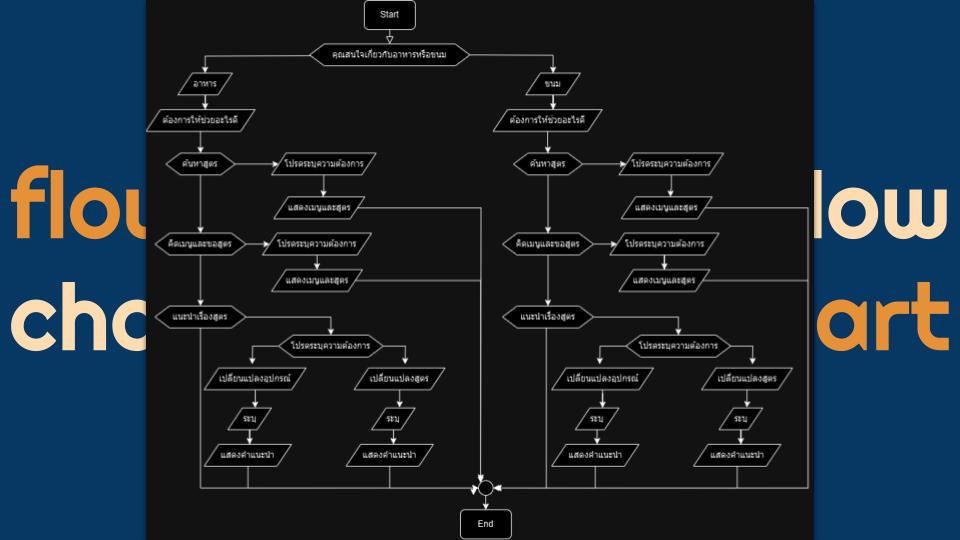
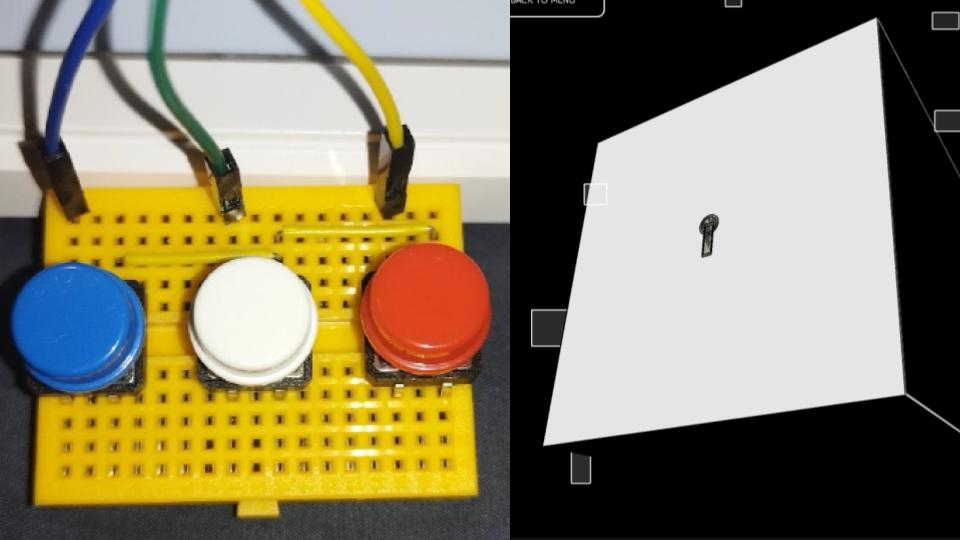
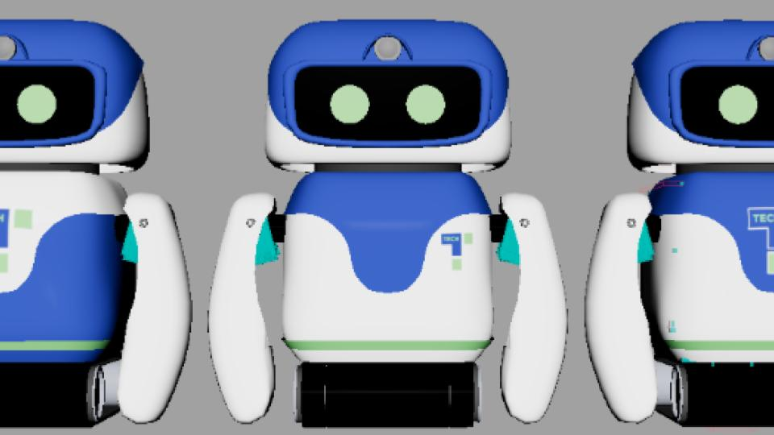

My Projects
GIVE ME Recipes:Chat bot
The process begins when the chatbot asks for the user's needs. The user responds by stating they want to find an oil-free food recipe. The chatbot then searches for and displays suitable recipes. Following this, the user refines the request, asking for a recipe that is specifically appropriate for clean eating. Finally, the chatbot selects and presents a clean eating recipe to the user, concluding the interaction.

Digital Puzzle Box Game
This project is a 3D puzzle box game that integrates Processing visuals with physical IoT hardware. The goal is to solve six unique mini-games on each face of the box, which involve tasks like color matching, sequence memorization, and maze navigation using components like potentiometers, buttons, and various sensors.

RobotMDT
RoboMDT is an educational robot designed to make learning to code fun and intuitive for children. It transforms abstract programming concepts into physical tasks using a simple, Scratch-like block-based interface. Core learning missions teach conditional logic and sensors through a "don't fall" challenge, and integrate computer vision with a servo arm for an "object lifting" task. For enhanced engagement, the robot features precise motor control for accurate movements and an LCD screen to display facial expressions, acting as an interactive learning companion.
